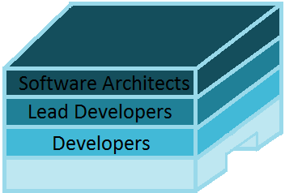

- Day 1 -
3rd April 2017
What is IBM Design Thinking? IBM Design Thinking is a framework to solve users’ problems at the speed and scale of the modern digital enterprise. It keeps you focused on what matters to users as you lead your team from ideas to outcomes.
The principles guide; problems and solutions are seen as an on-going conversation.
 A focus on user outcomes: drive business by helping users achieve their goals. |
 Restless reinvention: stay essential by treating everything as a prototype. |
 Diverse empowered teams: move faster by empowering diverse teams to act. |
|---|

The loop drives; understand the present and envision the future in a continuous cycle of observing, reflecting, and making. Observe: immerse yourself in the real world. Reflect: come together and look within. Make: give concrete form to abstract ideas.
The keys align; lead teams to great user outcomes using a scalable framework for team alignment.
 Hills: align teams on meaningful user outcomes to achieve. |
 Playbacks: stay aligned by regularly exchanging feedback. |
 Sponsor users: invite users into the work to stay true to real world needs. |
|---|

Imagine a glass building. There are three levels, each with a specifc role. It is not necessarily a hierachy however the people on the 2nd and 3rd floor look over and check up on the floors below them. For example: the Lead Developers would have a team made up of Developers and they would have to be accountable for their team, ensure everyone is doing their bit and their work. As well as making sure everyone knows what to be doing.
Software Architects:
A software expert who makes high-level design choices and dictates technical standards, including software coding standards, tools, and platforms. The leading expert is referred to as the chief architect.
Responsibilities
- Limit choices available during development
- Recognise potential reuse in the organization or in the application
- Subdivide a complex application, during the design phase, into smaller, more manageable pieces
- Grasp the functions of each component within the application
- Understand the interactions and dependencies among components
- Communicate these concepts to developers
Duties
- Architects make high-level design choices much more often than low-level choices. In addition, the architect may sometimes dictate technical standards, including coding standards, tools, or platforms
- Software architects may also be engaged in the design of the architecture of the hardware environment, or may focus entirely on the design methodology of the code
- Architects can use various software architectural models that specialize in communicating architecture
Lead Developers:
Lead developers are still developers and with that comes the features of being a developer. As well as this they make decisions for their team such as how long or how not long to spend on something. They are responsible for and oversee their team of developers and need to follow up on MVP's and other duties.
Responsibilities
- It is ultimately my responsibility that all of the developers in my team are adhering to the software quality standards agreed by my team and the wider development team so that work is done to the highest possible quality
- To understand and be able to talk about and explain to my team the importance of principles of good software design and development so that we are able to produce software of the highest possible quality in the fastest possible time and will be able to continue to do so in the future
- To understand and be able to talk coherently about the any practices (such as refactoring, TDD and pair programming) we are implementing and their benefits so that we are all working together and understand why they are so valuable
- To ensure the features developed by my team are produced to the highest possible quality in the fastest possible time and no less, so that we are able to continue to do so in the future
- To show the developers on my team better ways of doing things and help them improve their skills so that we all become better at our jobs
- To ensure the software my team is responsible for is healthy and that it’s health is visible to my team and the wider development team so that we can all focus on improving it and know where the most technical debt and legacy code is
- To act as example to all the developers on my team by being the person who most closely follows the principles and practices we have committed to so that the developers on my team feel confident they can too
- To act as example to all the developers on my team by advocating learning and taking the time to do so myself so that they feel comfortable they can too
Developers:
A developer is mainly involved the actually programming aspect. They do not make high level choices and are not in a manegerial role. Therefore they mostly focus on the programming and ensure that the work set for them is completed. Sometimes they can split up work between themselves depending on who is more comfortable or better able to handle that task. They have a backlog of things that need to be done and in what order so they always know what needs to be completed.
Responsibilities
- To only work on features when I am satisfied I have enough information to do so, so that we do not waste time reworking them
- To ensure all work is thoroughly tested through automated tests including unit tests, integration tests and acceptance tests before it is presented to the customer so that we have confidence it has met the criteria given and is robust enough to have confidence we can modify/extend it without breaking the existing functionality
- To adhere to the software quality standards and principles agreed by my team and the wider development team so that work is done to the highest possible quality
- Accept that continuously learning is part of what it is to be a software developer
- To take the time to improve my skills by attending Dojos and other sessions and by taking advantage of other resources available such as the library so that I am continually improving my ability to do my job and consistently delivering value to my Company